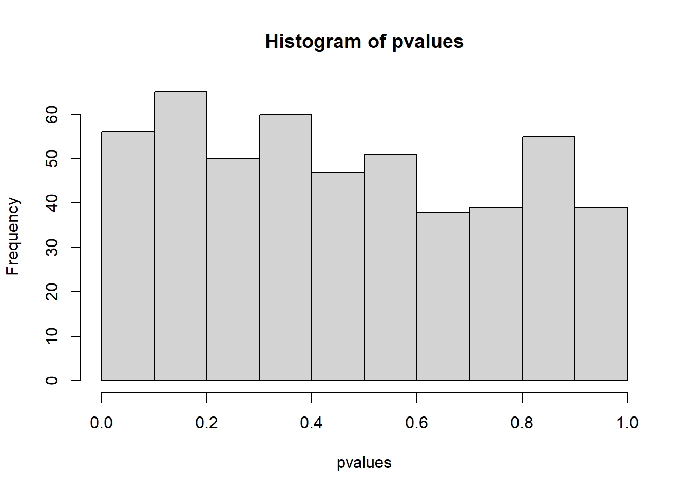

Chapter 3 Data structures
R data types and basic expressions1 : Common data structures in R include scalars, vectors, matrices, factors, data frames, and lists. These data structures can contain one or more individual data elements of several types, namely numeric (2.5), character (“Go Jacks”), or logical (TRUE or FALSE).
3.1 Basic concepts
3.1.1 Expressions
Type anything at the prompt, and R will evaluate it and print the answer.
1 + 1## [1] 2There’s your result, 2. It’s printed on the console right after your entry.
Type the string “Go Jacks”. (Don’t forget the quotes!)
"Go Jacks"## [1] "Go Jacks"3.1.2 Logical Values
Some expressions return a “logical value”: TRUE or FALSE. (Many programming languages refer to these as “boolean” values.) Let’s try typing an expression that gives us a logical value:
3 < 4## [1] TRUEAnd another logical value (note that you need a double-equals sign to check whether two values are equal - a single-equals sign won’t work):
2 + 2 == 5## [1] FALSET and F are shorthand for TRUE and FALSE. Try this:
T == TRUE## [1] TRUE3.1.3 Variables
As in other programming languages, you can store a value into a variable to access it later. Type x = 42 to store a value in x. x is a scalar, with only one data element.
x = 42You can also use the following. This is a conventional, safer way to assign values.
x <- 42x can now be used in expressions in place of the original result. Try dividing x by 2 (/ is the division operator), and other calculations.
x / 2## [1] 21log(x)## [1] 3.73767x^2## [1] 1764sqrt(x)## [1] 6.480741x > 1## [1] TRUEYou can re-assign any value to a variable at any time. Try assigning “Go Jacks!” to x.
x <- "Go Jacks!"You can print the value of a variable at any time just by typing its name in the console. Try printing the current value of x.
x## [1] "Go Jacks!"Now try assigning the TRUE logical value to x.
x <- TRUEYou can store multiple values in a variable or object. That is called a vector, which is explained below. An object can also contain a table with rows and columns, like an Excel spreadsheet, as a matrix, or data frame.
3.1.4 Functions
You call a function by typing its name, followed by one or more arguments to that function in parenthesis. Most of your R commands are functional calls. Let’s try using the sum function, to add up a few numbers. Enter:
sum(1, 3, 5)## [1] 9Some arguments have names. For example, to repeat a value 3 times, you would call the rep function and provide its times argument:
rep("Yo ho!", times = 3)## [1] "Yo ho!" "Yo ho!" "Yo ho!"Many times, we want to re-use a chunk of code. The most efficient way is to wrap these code as a function, clearly define what the input and the output. Functions are fundamental building blocks of R. Most of the times when we run R commands, we are calling and executing functions. We can easily define our very own functions.
For example, we have the following arithmetic function:
\[f(x)=1.5 x^3+ x^2-2x+1\]
Obviously, we can use the following code to do the computing:
x <- 5
1.57345 * x ^ 3 + x ^ 2 - 2 * x + 1## [1] 212.6813This will work, but every time we have to re-write this code. So let’s try to define our own function:
myf <- function(x) {
y = 1.57345 * x ^ 3 + x ^ 2 - 2 * x + 1
return(y)
}Note that “{” and “}” signify the beginning and end of a block of code. “function” tells R that a function is going to be defined. At the end, the “return” statement returns the desired value.
You can copy and paste the 4 lines of code to R and it defines a function called myf, which you can call by:
myf(5) # or myf(x = 5)## [1] 212.6813As you can see you get the same results when x=5. But now you can use this in many ways.
x <- - 10 : 10 # x now is a vector with 21 numbers -10, -9, … 10
myf(x) ## [1] -1452.45000 -1047.04505 -724.60640 -475.69335 -290.86520
## [6] -160.68125 -75.70080 -26.48315 -3.58760 2.42655
## [11] 1.00000 1.57345 13.58760 46.48315 109.70080
## [16] 212.68125 364.86520 575.69335 854.60640 1211.04505
## [21] 1654.45000plot(x, myf(x)) # see plot on the right.
Obviously functions can handle many different calculations beyond arithmetic functions. It can take in one or more inputs and return a list of complex data objects too.
Let’s define a function to count even numbers in a vector.
#counts the number of even intergers in vec
evencount <- function(vec) {
k <- 0 # assign o to i #assign 0 to a count varialbe k
for (i in vec) { #set i to vec[1],vec[2],...
if (i %% 2 == 0) k <- k + 1 # test if i is an even or odd number. %% is the modulo operator
}
return(k) #print the computed value of k
}x=c(2, 5, 7, 8, 14, 12, 8, 3) #a vector
evencount(x) #Call the function evencount(). ## [1] 5A vaiable is called local variable if it is only visible within a function. Such as k and vec are local variables to the function evencount(). They disappear after the function returns.
k
Error: object ‘vec’ not found
vec
Error: object ‘vec’ not found
A variable is called global variable if it is defined outside of functions.A global variable is also available within functions. Here is an example:
myfun.globle <- function (x){
y <- 1
return(x - 2 * y)
}
myfun.globle(8) # set x=8, and do the calculation: 8-2*y = 8-2*(1)=6## [1] 6Here y is a global variable.
The function myfun.globle2() defined below returns the same values as above. But both x and y within the the paratheses (x, y=1) following function are local variables.
myfun.globle2 <- function (x, y = 1){ #y is set as 1 within the function by default.
return(x - 2 * y)
}
myfun.globle2(8) #8-2*y = 8-2*(1)=6## [1] 63.1.5 Looking for Help and Example Code
? sum A web page will pope up. This is the official help information for this function. At the bottom of the page is some example code. The quickest way to learn an R function is to run the example codes and see the input and output. You can easily copy, paste, and twist the example code to do your analysis.
example() brings up examples of usage for the given function. Try displaying examples for the min function:
example(min)##
## min> require(stats); require(graphics)
##
## min> min(5:1, pi) #-> one number
## [1] 1
##
## min> pmin(5:1, pi) #-> 5 numbers
## [1] 3.141593 3.141593 3.000000 2.000000 1.000000
##
## min> x <- sort(rnorm(100)); cH <- 1.35
##
## min> pmin(cH, quantile(x)) # no names
## [1] -2.91210180 -0.65309447 -0.04353514 0.43252312 1.35000000
##
## min> pmin(quantile(x), cH) # has names
## 0% 25% 50% 75% 100%
## -2.91210180 -0.65309447 -0.04353514 0.43252312 1.35000000
##
## min> plot(x, pmin(cH, pmax(-cH, x)), type = "b", main = "Huber's function")##
## min> cut01 <- function(x) pmax(pmin(x, 1), 0)
##
## min> curve( x^2 - 1/4, -1.4, 1.5, col = 2)##
## min> curve(cut01(x^2 - 1/4), col = "blue", add = TRUE, n = 500)
##
## min> ## pmax(), pmin() preserve attributes of *first* argument
## min> D <- diag(x = (3:1)/4) ; n0 <- numeric()
##
## min> stopifnot(identical(D, cut01(D) ),
## min+ identical(n0, cut01(n0)),
## min+ identical(n0, cut01(NULL)),
## min+ identical(n0, pmax(3:1, n0, 2)),
## min+ identical(n0, pmax(n0, 4)))min(5:1, pi) # -> one number## [1] 1Example commands and plots will show up automatically by typing Return in RStudio. In R, you need to click on the plots.
example(boxplot) # bring example of boxplot
I found a lot of help information about R through Google. Google tolerate typos, grammar errors, and different notations. Also, most (99 %) of your questions have been asked and answered on various forums. Many R gurus answered a ton of questions on web sites like** stackoverflow.com**, with example codes! I also use Google as a reference.
It is important to add comments to your code. Everything after the “#” will be ignored by R when running. We often recycle and repurpose our codes.
max(1, 3, 5) # return the maximum value of a vector## [1] 53.2 Data structures
3.2.1 Vectors
A vector is an object that holds a sequence of values of the same type. A vector’s values can be numbers, strings, logical values, or any other type, as long as they’re all the same type. They can come from a column of a data frame. if we have a vector x:
x <- c(5, 2, 22, 11, 5)
x## [1] 5 2 22 11 5Here c stands for concatenate, do not use it as variable name. It is as special as you!
Vectors can not hold values with different modes (types). Try mixing modes and see what happens:
c(1, TRUE, "three")## [1] "1" "TRUE" "three"All the values were converted to a single mode (characters) so that the vector can hold them all. To hold diverse types of values, you will need a list, which is explained later in this chapter.
If you need a vector with a sequence of numbers you can create it with start:end notation. This is often used in loops and operations on the indices of vectors etc. Let’s make a vector with values from 5 through 9:
5:9## [1] 5 6 7 8 9A more versatile way to make sequences is to call the seq function. Let’s do the same thing with seq:
seq(from = 5, to = 9)## [1] 5 6 7 8 9seq also allows you to use increments other than 1. Try it with steps of 0.5:
seq(from = 5, to = 9, by = .5)## [1] 5.0 5.5 6.0 6.5 7.0 7.5 8.0 8.5 9.0Create a sequence from 5 to 9 with length 15:
seq(from = 5, to = 9, length = 15)## [1] 5.000000 5.285714 5.571429 5.857143 6.142857 6.428571 6.714286
## [8] 7.000000 7.285714 7.571429 7.857143 8.142857 8.428571 8.714286
## [15] 9.0000003.2.1.1 Commands about vector
Next we will try those commands about vector. First let’s find out what is the 4th element of our vector x <- c(5, 2, 22, 11, 5), or the elements from 2 to 4.
x[4]## [1] 11x[2:4]## [1] 2 22 11If you define the vector as y,
y <- x[2:4]No result is returned but you “captured” the result in a new vector, which holds 3 numbers. You can type y and hit enter to see the results. Or do some computing with it.
y <- x[2:4]; y## [1] 2 22 11This does exactly the same in one line. Semicolon separates multiple commands.
Now if we want to know the number of elements in the vector
length(x)## [1] 5It’s also easy to know about the maximum, minimum, sum, mean and median individually or together. We can get standard deviation too.
max(x)## [1] 22min(x)## [1] 2sum(x)## [1] 45mean(x)## [1] 9median(x)## [1] 5summary(x)## Min. 1st Qu. Median Mean 3rd Qu. Max.
## 2 5 5 9 11 22sd(x)## [1] 7.968689rank() function ranks the elements. Ties are shown as the average of these ranks. While sort() will sort from the smallest to the biggest, decreasing = T will make it sort form the biggest to the smallest.
rank(x)## [1] 2.5 1.0 5.0 4.0 2.5sort(x)## [1] 2 5 5 11 22sort(x, decreasing = T)## [1] 22 11 5 5 2diff() lag and iterate the differences of vector x.
diff(x)## [1] -3 20 -11 -6rev() will reverse the position of the elements in the vector.
rev(x)## [1] 5 11 22 2 5Operations are performed element by element. Same for log, sqrt, x^2, etc. They return vectors too.
log(x)## [1] 1.6094379 0.6931472 3.0910425 2.3978953 1.6094379sqrt(x)## [1] 2.236068 1.414214 4.690416 3.316625 2.236068x^2## [1] 25 4 484 121 252*x + 1## [1] 11 5 45 23 11If we don’t want the second element and save it as y:
y <- x[-2]
y## [1] 5 22 11 5Add an element 100 to the vector x between the second and the third element:
x <- c(5, 2, 22, 11, 5)
x <- c(x[1:2], 100, x[3:5] ) #add an element 100 to x between elements 8 and 9
x #The value 100 is added to the previous vector x ## [1] 5 2 100 22 11 5Length of the new created x is:
length(x)## [1] 6To add a new element to the end, we can use the two commands below, they generate same result.
x <- c(5, 2, 22, 11, 5)
c(x, 7)## [1] 5 2 22 11 5 7append(x, 7)## [1] 5 2 22 11 5 7Creat an empty vector y:
y <- c()
y## NULLlength(y)## [1] 0Sometimes we are interested in unique elements:
x <- c(5, 2, 22, 11, 5)
unique(x)## [1] 5 2 22 11And the frequencies of the unique elements:
x <- c(5, 2, 22, 11, 5)
table(x)## x
## 2 5 11 22
## 1 2 1 1If we are interested in the index of the maximum or minimum:
x <- c(5, 2, 22, 11, 5)
which.max(x)## [1] 3which.min(x)## [1] 2Or we need to look for the location of a special value:
x <- c(5, 2, 22, 11, 5)
which(x == 11)## [1] 4Or more complicated, we want to find the locations where \(x^2>100\):
x <- c(5, 2, 22, 11, 5)
x^2## [1] 25 4 484 121 25which (x^2 > 100)## [1] 3 4We can randomly select some elements from the vector. Run the following code more than once, do you always get the same results? The answer is “No”. Because the 3 elements are randomly selected.
x <- c(5, 2, 22, 11, 5)
sample(x, 3)## [1] 5 5 11Elements in the vector can have names. Type “x” in the command window to see the difference.
x <- c(5, 2, 22, 11, 5)
names(x) <- c("David", "Breck", "Zach", "Amy", "John")
x## David Breck Zach Amy John
## 5 2 22 11 5Now we can refer to the elements by their names.
x["Amy"]## Amy
## 11The any() and all() functions produce logical values. They return if any of all of their arguments are TRUE.
x <- c(5, 2, 22, 11, 5)
any(x < 10)## [1] TRUEx <- c(5, 2, 22, 11, 5)
any(x < 0)## [1] FALSEx <- c(5, 2, 22, 11, 5)
all(x < 10)## [1] FALSEx <- c(5, 2, 22, 11, 5)
any(x > 0)## [1] TRUEx>10## [1] FALSE FALSE TRUE TRUE FALSEIf we want to get a subset from a vector, there are multiple methods can be used.Here are some examples:
x <- c(NA, 2, -4, NA, 9, -1, 5)
x## [1] NA 2 -4 NA 9 -1 5y <- x[x < 0]
y## [1] NA -4 NA -1There are annoying NAs in the subset y. We can remove the NAs by applying na.rm() function to y. Or we can use the subset() function to get a “clean” data without NAs.
subset(x, x < 0)## [1] -4 -1The ifelse() function allows us do conditional element selection. The usage is ifelse(test, yes, no). The yes and no depends on the test is true of false. Here are two examples.
x <- c(2, -3, 4, -1, -5, 6)
y <- ifelse(x > 0, 'Positive', 'Negative')
y## [1] "Positive" "Negative" "Positive" "Negative" "Negative" "Positive"In this example, the element in y is either ‘positive’ or ‘negative’. It depends on x greater than 0 or less than 0.
x <- c(3, 4, -6, 1, -2)
y <- ifelse (x < 0, abs(x), 2 * x + 1)
y## [1] 7 9 6 3 2In this example, if an element in x is less than 0, then take the absolute value of the element. Otherwise multiply the element by 2 then add 1.
If we have two vectors and try to compare them with each other:
x <- c(5, 2, 22, 11, 5)
y <- c(5, 11, 8)
z <- match(y, x)
z## [1] 1 4 NAmatch() returns the locations in 2nd vector. NA means missing, not found. To check if NA is in a vector, we use the function is.na( ). Note that the result is a vector holding logical values. Do we have missing value in our vector?
is.na(x)## [1] FALSE FALSE FALSE FALSE FALSEis.na(z)## [1] FALSE FALSE TRUESometimes, when working with sample data, a given value isn’t available. But it’s not a good idea to just throw those values out. R has a value that explicitly indicates a sample was not available: NA. Many functions that work with vectors treat this value specially. For our z vector, try to get the sum of its values, and see what the result is:
sum(z)## [1] NAThe sum is considered “not available” by default because one of the vector’s values was NA. This is the responsible thing to do; R won’t just blithely add up the numbers without warning you about the incomplete data. We can explicitly tell sum (and many other functions) to remove NA values before they do their calculations, however.
Bring up documentation for the sum function:
? sumsum package:base
R Documentation …
As you see in the documentation, sum can take an optional named argument, na.rm. It’s set to FALSE by default, but if you set it to TRUE, all NA arguments will be removed from the vector before the calculation is performed.
Try calling sum again, with na.rm parameter set to TRUE:
sum(z, na.rm = TRUE)## [1] 5Let’s using examples to show the differences between NULL and NA.
# build up a vector of numbers greater than 10 in vector vec.x
vec.x <- c(40, 3, 11, 0, 9)
z1 <- NULL
for (i in vec.x) {
if (i > 10) z1 <- c(z1, i)
}
z1## [1] 40 11length(z1)## [1] 2# build up a vector of numbers greater than 10 in vector vec.x
vec.x <- c(40, 3, 11, 0, 9)
z2 <- NA
for (i in vec.x) {
if (i > 10) z2 <- c(z2, i)
}
z2## [1] NA 40 11length(z2)## [1] 3Comparing the length of z1 and z2, we know the NULL is counted as nonexistent, but the NA is counted as a missing value.
Let’s do some opertations related to vectors. Firsly, we start from the operation between a vector and a scalar.
# Operation between x and a scalar
x <- c(1, 4, 8, 9, 10)
y <- 1
x+y## [1] 2 5 9 10 11As you can see, 1 is added to each element in x. The operation is equivalent to:
x <- c(1, 4, 8, 9, 10)
y <- c(1, 1, 1, 1, 1)
x+y## [1] 2 5 9 10 11The operation between vectors with same length is element-wise. For example:
# Operation between two vectors with same length
x <- c(1, 4, 8, 9, 10)
y <- c(1, 2, 0, 3, 15)
x+y## [1] 2 6 8 12 25x*y## [1] 1 8 0 27 150If vectors have different length, then R will automatically recycles the shorter one, untill it has the same length as the longer one. For example:
x <- c(1, 4, 8, 9, 10)
y <- c(1, 2)
x+y## Warning in x + y: longer object length is not a multiple of shorter object
## length## [1] 2 6 9 11 11The y was recyled, in fact the real operation is showed below:
x <- c(1, 4, 8, 9, 10)
y <- c(1, 2, 1, 2, 1)
x+y## [1] 2 6 9 11 113.2.1.2 Scatter Plots of two vectors
The plot function takes two vectors, one for X values and one for Y values, and draws a graph of them. Let’s draw a graph showing the relationship of numbers and their sines.
x <- seq(1, 20, 0.1)
y <- sqrt(x)Then simply call plot with your two vectors:
plot(x, y)
Great job! Notice on the graph that values from the first argument (x) are used for the horizontal axis, and values from the second (y) for the vertical.
3.2.1.3 Fish example of vector
Once upon a time, Tom, Jerry, and Mickey went fishing and they caught 7, 3, and 9 fishes, respectively. This information can be stored in a vector, like this:
c(7, 3, 9)## [1] 7 3 9The c() function creates a new vector by combining a set of values. If we want to continue to use the vector, we hold it in an object and give it a name:
fishes <- c(7, 3, 9)
fishes## [1] 7 3 9fishes is a vector with 3 data elements. There are many functions that operate on vectors. You can plot the vector:
barplot(fishes) # see figure 6.1AYou can compute the total:
sum(fishes)## [1] 19We can access the individual elements by indices:
fishes[3]## [1] 9Jerry protested that the ¼ inch long fish he caught and released per fishing rules was not counted properly. We can change the values in the 2nd element directly by:
fishes[2] <- fishes[2] + 1 On the left side, we take the current value of the 2nd element, which is 3, and add an 1 to it. The result (4) is assigned back to the 2nd element itself. As a result, the 2nd element is increased by 1. This is not an math equation, but a value assignment operation. More rigorously, we should write this as fishes[2] <- fishes[2] + 1
We can also directly overwrite the values.
fishes[2] <- 4
fishes## [1] 7 4 9They started a camp fire, and each ate 1 fish for dinner. Now the fishes left:
fishes2 <- fishes - 1
fishes2## [1] 6 3 8Most arithmetic operations work just as well on vectors as they do on single values. R subtracts 1 from each individual element. If you add a scalar (a single value) to a vector, the scalar will be added to each value in the vector, returning a new vector with the results.
While they are sleeping in their camping site, a fox stole 3 fishes from Jerry’s bucket, and 4 fishes from Mickey’s bucket. How many left?
stolen <- c(0, 3, 4) # a new vector
fishes2 - stolen## [1] 6 0 4If you add or subtract two vectors of the same length, R will take the corresponding values from each vector and add or subtract them. The 0 is necessary to keep the vector length the same.
Proud of himself, Mickey wanted to make a 5ft x 5ft poster to show he is the best fisherman. Knowing that a picture worthes a thousand words, he learned R and started plotting. He absolutely needs his names on the plots. The data elements in a vector can have names or labels.
names(fishes) <- c("Tom", "Jerry", "Mickey")The right side is a vector, holding 3 character values. These values are assigned as the names of the 3 elements in the fishes vector. names is a built-in function. Our vector looks like:
fishes## Tom Jerry Mickey
## 7 4 9barplot(fishes) # see figure 6.1B
Figure 3.1: Simple Bar plot
Assigning names for a vector also enables us to use labels to access each element. Try getting the value for Jerry:
fishes["Jerry"]## Jerry
## 4Tom proposes that their goal for next fishing trip is to double their catches.
2 * fishes## Tom Jerry Mickey
## 14 8 18Hopelessly optimistic, Jerry proposed that next time each should “square” their catches, so that together they may feed the entire school.
sum(fishes ^ 2)## [1] 146Note that two operations are nested. You can obviously do it in two steps.
3.2.2 Matrix operations
Matrix is a two dimensional data structure in R programming. Technically, a matrix is also a vector, but with two additional attributes: the number of rows and the number of columns. A matrix has rows and columns, but it can only contain one type of values, i.e. numbers, characters, or logical values.
We can creat a matrix by using rbind or cbind function. rbind combine all row Here are two examples:
m <- rbind(c(3, 4, 5), c(10, 13, 15)) # combine vectors by row
m## [,1] [,2] [,3]
## [1,] 3 4 5
## [2,] 10 13 15n <- cbind(c(3, 4, 5), c(10, 13, 15), c(3, 2, 1)) # combine vectors by column
n## [,1] [,2] [,3]
## [1,] 3 10 3
## [2,] 4 13 2
## [3,] 5 15 1s <- rbind(m,n) #combine two matrices m and n by row
s## [,1] [,2] [,3]
## [1,] 3 4 5
## [2,] 10 13 15
## [3,] 3 10 3
## [4,] 4 13 2
## [5,] 5 15 1To use rbind() combining matrices by row, the matrices must have same number of columns. Similar to cbind(), the matrices must have same number of rows.
We can also create a matrix by using the matrix() function:
x <- matrix(seq(1:12), nrow = 4, ncol = 3)
x## [,1] [,2] [,3]
## [1,] 1 5 9
## [2,] 2 6 10
## [3,] 3 7 11
## [4,] 4 8 12The argument seq() create a sequence from 1 to 12, nrom() define the number of rows in the matrix, ncol() define the number of columns in the matrix. We don’t have to give both nrom() and ncol() since if one is provided, the other is inferred from length of the data.
y <- matrix(seq(1:12), nrow = 4)
y## [,1] [,2] [,3]
## [1,] 1 5 9
## [2,] 2 6 10
## [3,] 3 7 11
## [4,] 4 8 12As we can see that, the matrix is filled in column-wise by default. If you want to fill a matrix by row-wise, add the byrow = TRUE to the argument:
z <- matrix(seq(1:12), nrow = 4, byrow = TRUE) # fill matrix row-wise
z## [,1] [,2] [,3]
## [1,] 1 2 3
## [2,] 4 5 6
## [3,] 7 8 9
## [4,] 10 11 12The following code will create an empty matrix y:
w <- matrix(nrow = 4, ncol = 3)
w## [,1] [,2] [,3]
## [1,] NA NA NA
## [2,] NA NA NA
## [3,] NA NA NA
## [4,] NA NA NAWe can assign values to the matrix. For example, let’s assign the value 3 to the position at first row and first column and value 100 to position of the second row and third column:
w[1,1] <- 3
w[2,3] <- 100
w## [,1] [,2] [,3]
## [1,] 3 NA NA
## [2,] NA NA 100
## [3,] NA NA NA
## [4,] NA NA NAWe can also create a matrix from a vector by setting its dimension using function dim().
x <- c(1, 5, 6, 9, 8, 10, 21, 15, 76)
x## [1] 1 5 6 9 8 10 21 15 76class(x)## [1] "numeric"dim(x) <- c(3, 3)
x## [,1] [,2] [,3]
## [1,] 1 9 21
## [2,] 5 8 15
## [3,] 6 10 76class(x)## [1] "matrix"We can convert a non-matrix data set to a matrix using as.matrix() function. Take the data iris as an example.
subset.iris <- iris[1:10, 1:4]
class(subset.iris)## [1] "data.frame"The data structure of subset.iris is a data frame. The function as.matrix wii transfer a data frame to a matix.
x <- as.matrix(subset.iris)
class(x)## [1] "matrix"Various matrix operation can be applied in R. For example:
x <- matrix(c(1, 2, 3, 4, 5, 6), nrow = 2)
x## [,1] [,2] [,3]
## [1,] 1 3 5
## [2,] 2 4 6x^2 #Squared each element in x## [,1] [,2] [,3]
## [1,] 1 9 25
## [2,] 4 16 36You can transform the matrix if you want, for the convenience of view and analysis.
y <- t(x) # transpose of x
y## [,1] [,2]
## [1,] 1 2
## [2,] 3 4
## [3,] 5 6x %*% y # Matrix Multiplication## [,1] [,2]
## [1,] 35 44
## [2,] 44 56#x - y # Matrix subtractionError in x - y : non-conformable arrays
The error reminders us that the matrices for subtraction must have same dimensions.
y <- matrix(rep(1, 6), nrow = 2)
y## [,1] [,2] [,3]
## [1,] 1 1 1
## [2,] 1 1 1x - y## [,1] [,2] [,3]
## [1,] 0 2 4
## [2,] 1 3 5We can produce a new matrix by each element is doubled and added 5
z <- 2 * x + 5
z## [,1] [,2] [,3]
## [1,] 7 11 15
## [2,] 9 13 17We can also get a logical matrix using logical code like:
x <- matrix(c(12, 34, 51, 27, 26, 10), ncol = 2)
x > 20## [,1] [,2]
## [1,] FALSE TRUE
## [2,] TRUE TRUE
## [3,] TRUE FALSEWe can extract all TRUE results from x by using x[x>20].
x[x > 20]## [1] 34 51 27 26Similar we can define a vector with logical values, then apply it to x to get all TRUE values.
log.vau <- c(FALSE, TRUE, TRUE, TRUE, TRUE, FALSE)
x[log.vau]## [1] 34 51 27 26Remember matrix is a vector, and filled by column-wise. Therefore the vector with logical values applies to x by column-wise order.
Since matrix is a vector with two dimension, all operations for vectors also apply to matrix. For example:
x[1, ] # Get the first row of x## [1] 12 27a <- as.matrix(iris[, 1:4]) #Take out the first 4 columns of iris and convert it to matrix.
c <- a[5:10, 2:4] # Extract a subset
c## Sepal.Width Petal.Length Petal.Width
## [1,] 3.6 1.4 0.2
## [2,] 3.9 1.7 0.4
## [3,] 3.4 1.4 0.3
## [4,] 3.4 1.5 0.2
## [5,] 2.9 1.4 0.2
## [6,] 3.1 1.5 0.1x <- matrix(c(1, 2, 3, 4, 5, 6), nrow = 2)
c[1:2, ] <- x # Replace the first two rows of c with x
c## Sepal.Width Petal.Length Petal.Width
## [1,] 1.0 3.0 5.0
## [2,] 2.0 4.0 6.0
## [3,] 3.4 1.4 0.3
## [4,] 3.4 1.5 0.2
## [5,] 2.9 1.4 0.2
## [6,] 3.1 1.5 0.1Now if we want to know the mean and sum of these rows and columns, try rowMeans(), colMeans(), rowSums(), colSums().
x <- as.matrix(iris[1:10, 1:4])
rowMeans(x)## 1 2 3 4 5 6 7 8 9 10
## 2.550 2.375 2.350 2.350 2.550 2.850 2.425 2.525 2.225 2.400colMeans(x)## Sepal.Length Sepal.Width Petal.Length Petal.Width
## 4.86 3.31 1.45 0.22rowSums(x)## 1 2 3 4 5 6 7 8 9 10
## 10.2 9.5 9.4 9.4 10.2 11.4 9.7 10.1 8.9 9.6colSums(x)## Sepal.Length Sepal.Width Petal.Length Petal.Width
## 48.6 33.1 14.5 2.2Here we are computing the standard deviation by columns, using apply() function.The second argument “1” or “2” in apply() reprents the function applies to rows or columns.
apply(x, 2, sd) # Calculate the standard deviation of each column in x ## Sepal.Length Sepal.Width Petal.Length Petal.Width
## 0.29135698 0.30713732 0.10801234 0.07888106Or median by rows, using 1 for rows.
apply(x, 1, median) # Calculate the median of each row in x ## 1 2 3 4 5 6 7 8 9 10
## 2.45 2.20 2.25 2.30 2.50 2.80 2.40 2.45 2.15 2.30Heatmap is my favorite type of graph for visualizing a large matrix data.
heatmap(x, scale = "column", margins = c(10,5))
Example: Define a function to find the positions of minimal value in each column of subset.iris <- as.matrix(iris[1:10, 1:4]).
find.min.posi <- function(x){
y <- function(xcol){
return(which.min(xcol))
}
return(apply(x, 2, y))
}subset.iris <- as.matrix(iris[1:10, 1:4])
subset.iris## Sepal.Length Sepal.Width Petal.Length Petal.Width
## 1 5.1 3.5 1.4 0.2
## 2 4.9 3.0 1.4 0.2
## 3 4.7 3.2 1.3 0.2
## 4 4.6 3.1 1.5 0.2
## 5 5.0 3.6 1.4 0.2
## 6 5.4 3.9 1.7 0.4
## 7 4.6 3.4 1.4 0.3
## 8 5.0 3.4 1.5 0.2
## 9 4.4 2.9 1.4 0.2
## 10 4.9 3.1 1.5 0.1find.min.posi(subset.iris)## Sepal.Length Sepal.Width Petal.Length Petal.Width
## 9 9 3 10As you can see that the minimal value for Sepal.Length is 4.4 which locates at the 9th row. Similar to other variable. The minimal value locates at the 9th, 3rd and 10th row for Sepal.Width, Petal.Lenth and Petal.Width respectively.
find.max <- function(x){
y <- function(xcol){
return(_________)
}
return(_______(x, ____, y))
}
________(subset.iris.2)
To make a matrix more easily readable, we can use functions colnames() and rownames to assign names to the columns and rows of the matrix. For example:
y <- rbind(c(1, 3, 5), c(2, 4, 6))
y## [,1] [,2] [,3]
## [1,] 1 3 5
## [2,] 2 4 6colnames(y) <- c('First.Col', 'Second.Col', 'Third.Col')
row.names(y) <- c('odd.number', 'even.number')
y## First.Col Second.Col Third.Col
## odd.number 1 3 5
## even.number 2 4 6Another interesting application of matrix is the manipulation of images.You may have heard pixel matrix which represents “picure elements”. They are small little dots making up images. Each image is a matrix with thousands or even millions of pixels. Each pixel can only be one color at a time. If we have a grayscale imge, the brightness of color for each pixel is determined by the value assigned to it. In other words, the pixel value is a single number that represents the brightness of the pixel. For example, if the color value 0.2941 is assigned to a pixel which locates 3rd row and 4th column, then the image at 3rd row and 4th column is pretty dark. The range of the colors from black to white correspond to the scale varies from 0% to 100%.
Most time, we need to blur images or add mosaic to a picture for various purposes. Let’s use one example to demonstrate how to add mosaic to a grayscale image.
Example: Add mosaic to Einstein image
Firstly, let’s read an grayscale image of Einstein into R and view the image.
library(pixmap)## Warning: package 'pixmap' was built under R version 3.5.2EINSTEIN <- read.pnm("EINSTEIN.pgm", cellres = 1)
plot(EINSTEIN)
Then let us look at structure of this image:
str(EINSTEIN)## Formal class 'pixmapGrey' [package "pixmap"] with 6 slots
## ..@ grey : num [1:512, 1:512] 0.596 0.541 0.522 0.529 0.561 ...
## ..@ channels: chr "grey"
## ..@ size : int [1:2] 512 512
## ..@ cellres : num [1:2] 1 1
## ..@ bbox : num [1:4] 0 0 512 512
## ..@ bbcent : logi FALSEHere we get a new class which is S4 type. We don’t go into depth for this time. One fact we need to pay attendtion is that we must use “@” instead of “$” sign to designate the components.
class(EINSTEIN@ grey)## [1] "matrix"The class of EINSTEIN@ grey is matrix. The output ..@ grey : num [1:512, 1:512] shows that the dimension of matrix is 512*512. The values “0.596 0.541 0.522 0.529 0.561 …” reprent the brightness values in the matrix. For example, the value of the pixel at 3rd row and 4th column is 0.2941176 as showed below:
EINSTEIN@ grey[3,4]## [1] 0.2941176If we change the value 0.2941176 to 0 by EINSTEIN@ grey[3,4] <- 0, then that pixel will become pure black. If we assign a random number between 0 to 1 to the value, then the color in the pixel will be randomly assigned based on the random number. Using this idea, we define a masoic function which will be used to blur the image.
mosaic.plot <- function(image, yrange, xrange){
length.y <- length(yrange)
length.x <- length(xrange)
image2 <- image
whitenoise <- matrix(nrow = length.y, ncol = length.x, runif(length.y * length.x))
image2@grey[yrange, xrange] <- whitenoise
return(image2)
}The argument image is the original image, yrange is the range of rows that you want to blur, xrange is the range of columns that you want to blur. The xrange and yrange construct the mosaic region. Since we don’t want to change the origial image,therefore we copy the original image to image2 by assigning image to image2. The whitenoise creates a matrix filled with random numbers following uniform distribution. The dimensions of whitenoise is determined by the mosaic region. Replace the values in the original image that you want to blur image2@grey[yrange,xrange] by the whitenoise matrix.
EINSTEIN.mosaic <- mosaic.plot(EINSTEIN, 175:249, 118:295)
plot(EINSTEIN.mosaic)
Here, we take yrange=175:249 and xrange=118:295 to select a sub-matrix from 175th row to 249th row, and 118th column to 295th column. This sub-matrix store the color values of Einstein’ eyes region. The sub-matix is replaced by whitenoise matrix. Therefore the image near eyes region are replaced by random colors.
The function locator() allows us to find the relevant rows and columns. Type locator() in the Console window, then R will wait for you to click a point within an image, then click esc on your keyboard to exit the function. Then the function will return the coordinates of that point in the Console window. If you click more points once, then the function will return all coordinates of these points sorted by your clicking order. You must be careful about the y-coordinate. The row numbers in pixmap objects increase from the top of the image to the bottom, therefore you need to opposite the y-coordinate by subtracting them from the number of rows in the original image. For example, the y-coordinates that I obtained from locator() function are 337 and 263. After subtracting them from 512, I got 175 and 249. They are the yrange used in the mosaic function.
Exercise 3.16 Using the mosaic.plot() function to blur the image of mona_lisa.pgm by adding mosaic to her eyes region. Your output should look like the graph below.

Exercise 3.17 Fill in blanks of the following function so that the eyes region of Mona Lisa is covered by pure color, not mosaic.
mosaic.plot.2 <- function(picture, yrange, xrange, degree){
length.y <- _______(yrange)
length.x <- length(______)
pic2 <- picture
pic2@____[_______,_______] <- degree
return(pic2)
}
3.2.3 Lists
All elements in vectors must be same type. The list can combine objectes of different types. Let’s start from creating a list:
y <- list(5, "John Doe", c(100, 7), mean) # a list with 4 components
y## [[1]]
## [1] 5
##
## [[2]]
## [1] "John Doe"
##
## [[3]]
## [1] 100 7
##
## [[4]]
## function (x, ...)
## UseMethod("mean")
## <bytecode: 0x000000001ac32918>
## <environment: namespace:base>There are 4 components in the list y. We can associate each components with a tag. We add tags “height”, “name”, “BP” and “fun” to the y.
y <- list(height = 5, name = "John Doe", BP = c(100, 77), fun = mean)
y## $height
## [1] 5
##
## $name
## [1] "John Doe"
##
## $BP
## [1] 100 77
##
## $fun
## function (x, ...)
## UseMethod("mean")
## <bytecode: 0x000000001ac32918>
## <environment: namespace:base>Here is another example for creating a list:
x1 <- matrix(c(4, 2, 5, 6, 10, 9), ncol = 3) # create a matrix
x2 <- 8 : 1
x3 <- c(2.4, 5.1, 9.0, 4.4)
x4 <- c('u', 'v', 'w')
z <- list(x1, x2, x3, x4)
z## [[1]]
## [,1] [,2] [,3]
## [1,] 4 5 10
## [2,] 2 6 9
##
## [[2]]
## [1] 8 7 6 5 4 3 2 1
##
## [[3]]
## [1] 2.4 5.1 9.0 4.4
##
## [[4]]
## [1] "u" "v" "w"We can build a list by creating an empty list and assigning values to it.
v <- list() #Create an empty list
v[[1]] <- matrix(c(4, 2, 5, 6, 10, 9), ncol = 3) # Assign a matrix to v[[1]]
v[[2]] <- 8 : 1 #Assign a vector to v[[2]]
v[[3]] <- x3 #Assign x3 to v[[3]] where x3 is defined as above
v[[4]] <- x4 #Assign x4 to v[[4]] where x4 is defined as above
v## [[1]]
## [,1] [,2] [,3]
## [1,] 4 5 10
## [2,] 2 6 9
##
## [[2]]
## [1] 8 7 6 5 4 3 2 1
##
## [[3]]
## [1] 2.4 5.1 9.0 4.4
##
## [[4]]
## [1] "u" "v" "w"We used different methods creating list z and v. The list v and z are identical because that we assigned same components for v as that of in z.
There are several different ways to access the elements in a list. For example, to access the third component in y:
y <- list(height = 5, name = "John Doe", BP = c(100, 77), fun = mean)y[[3]] #Specifing the number in a double square braket## [1] 100 77y$BP #Using $ sign## [1] 100 77y[["BP"]] #Using the tag## [1] 100 77Note: we used double square braket ‘[[]]’ to access the element in a list, which is different from using single square braket ‘[]’ in a vector. If we use sigle square braket in a list, we will get a sublist. For example, y[3] returns a list, y[[3]] returns a numerical vector. Functions class() and is.list can be used to check the types.
y[3]## $BP
## [1] 100 77class(y[3])## [1] "list"is.list(y[3])## [1] TRUEy[[3]]## [1] 100 77class(y[[3]]) #Get the class of y[[3]] ## [1] "numeric"is.list(y[[3]]) #Check if y[[3]] is a list or not## [1] FALSEThe forth component of y is fun = mean. There are no quotation marks around mean. The class(y[[4]]) returns a function.
class(y[[4]])## [1] "function"This implies that y[[4]] is same as the mean() function. For example:
y[[4]](c(1, 2, 3, 4, 5)) #Get the mean of 1, 2, 3, 4, 5## [1] 3 list1 <- list(Name = "Tom", Hobby = "Fishing", Num.fish = c(16, 27, 5))Here are some examples for list operation:
y <- list(height = 5, name = "John Doe", BP = c(100, 77), fun = mean)
y[[2]] <- "Mike" #Change the 2nd component from "John Doe" to "Mike"
y[[4]] <- NULL #Delete the 4th component by setting it to NULL
y## $height
## [1] 5
##
## $name
## [1] "Mike"
##
## $BP
## [1] 100 77The output shows that the name has been changed to Mike and the mean function is deleted. So far, the length of y is 3:
length(y)## [1] 3We can add the forth components to y using the following code:
y$class <- c("math", "art") #Add a class component
y## $height
## [1] 5
##
## $name
## [1] "Mike"
##
## $BP
## [1] 100 77
##
## $class
## [1] "math" "art"If we have a vector of tags and a vector of corresponding values, we can associate the names and values into a list by creating an empty list and then fill it via assignment statements:
sales <- c(100, 105, 98, 112)
seasons <- c("Spring", "Summer", "Fall", "Winter")
sale.tag <- list() #Create an empty list
sale.tag[seasons] <- sales
sale.tag## $Spring
## [1] 100
##
## $Summer
## [1] 105
##
## $Fall
## [1] 98
##
## $Winter
## [1] 112Equivalently, we can associate the names and values by creating an empty list and then assign each component corresponding value or vector. For example.
sale.tag <- list() #Create an empty list
sale.tag[["Spring"]] <- 100
sale.tag[["Summer"]] <- 105
sale.tag[["Fall"]] <- 98
sale.tag[["Winter"]] <- 112
sale.tag## $Spring
## [1] 100
##
## $Summer
## [1] 105
##
## $Fall
## [1] 98
##
## $Winter
## [1] 112Exercise 3.19 Based on the data set of sale.tag, choose all correct answers from the following options A - F.
A: sale.tag[[1]]
B: sale.tag[[Spring]]
C: sale.tag[[“Spring”]]
D: sale.tag[“Spring”]
E: sale.tag[1]
F: sale.tag[Spring]
2, Which options return a list. Answer:___________
3, Which options returns an error. Answer:___________
Suppose we want to calculate the mean of sales in the dataset sale.tag. Because basic statistical functions work on vectors but not on lists. The mean() does not work: > mean(sale.tag)
[1] NA
Warning message:
In mean.default(sale.tag) :
argument is not numeric or logical: returning NA
To calculate the mean, we need to use function unlist() to flatten the list into a vector.
mean(unlist(sale.tag))## [1] 103.75Similar to apply() funciton works on vectors, lapply() (for list apply) works on each component of lists. Here is an example:
x <- list(c(10, 20, 30), c(4, 5, 6, 7, 8))
mean.x <- lapply(x, mean)
mean.x## [[1]]
## [1] 20
##
## [[2]]
## [1] 6The mean.x returns a list consisting of 20 and 6 which are means of components of x respectively.
When the list returned by lapply() could be simplified to a vector or matrix, we can use function sapply() (for simplified [l]apply). Let’s redo the previous example by sapply() function.
mean.x.2 <- sapply(x, mean)
mean.x.2## [1] 20 6We can double check the outputs by class() or is.vector() function:
class(mean.x) ## [1] "list"class(mean.x.2) ## [1] "numeric"is.vector(mean.x.2)## [1] TRUEHere is another example for sapply() function. Suppose we have NULL elements in a list.null. To remove the NULL element, apply is.null function to every element of the list.null. If the logical value is TRUE, i.e. the element is a NULL, then delete the element by setting NULL to it.
list.null <- list('art', NULL, c(2, 4, 6, 8))
list.null## [[1]]
## [1] "art"
##
## [[2]]
## NULL
##
## [[3]]
## [1] 2 4 6 8list.null[sapply(list.null, is.null)] <- NULL
list.null## [[1]]
## [1] "art"
##
## [[2]]
## [1] 2 4 6 8For a small size data set, if we can locate the position of NULL element, we can easily remove the NULL element by setting NULL to that element. For example, we already know the second element of list.null is NULL, to remove this NULL element, we set a NULL to the second element:
list.null <- list('art', NULL, c(2, 4, 6, 8))
list.null[[2]] <- NULL
list.null## [[1]]
## [1] "art"
##
## [[2]]
## [1] 2 4 6 8But for large size of data set, we turn to the sapply() function to remove NULL elements.
Example: Suppose we have a list of customers who visited our store in the last 10 days. Some customers visited the store more than once. We want to find out on which days and the total number of days that each customer visited. The customer names are recorded by the order of the day they came:
customer <- list("Alex", "Brandon", "Alex", "Daniel", "Grace", "Mary",
"Mary", "Alex", "Tom", "Grace")Firsly, we define a function which returns all locations of same elements in a list.
loc.names <- function(f){
y <- unlist(f) # Flatten a list x into a vector y
x <- list() # Create an empty list
for (i in 1:length(y)){
c.name <- y[i] # Assign the ith element to c.name.
x[[c.name]] <- c(x[[c.name]],i) # assign values to x[[c.name]]. c.name is the name of x.
}
return(x)
}the f will be replaced by your own list. In this example, f will be replaced by the list of customer when we apply the funtion.
x <- list () # create an empty list.
In the for loop, i starts from 1 to the length of y. In our example, the length of y is the length of list of customers: 10.
c.name <- y[i] # Assign the ith element in y to a new variable c.name. For example, if i=1, y[1] is the “Alex”, then c.name = “Alex”.
x[[c.name]] <- c(x[[c.name]], i) For i=1, we have c.name <- “Alex”, then x[[c.name]] = x[[“Alex”]] = NULL since x starting from an empty list. Therefore c(x[[“Alex”]], i) = c(NULL, i) = i = 1. The value 1 will be assigned to x[[“Alex”]] by the code: x[[“Alex”]] <- c(x[[“Alex”]], i) = 1. Now x is not an empty list, it is a list with 1 component:
x <- list()
x[["Alex"]] <- 1
x## $Alex
## [1] 1For i=2, y[2] <- “Brandon”, then similar to the case of i=1, we have x[[“Brandon”]] <- 1:
x[["Brandon"]] <- 1
x## $Alex
## [1] 1
##
## $Brandon
## [1] 1For i=3, y[3] <- “Alex”. We have met “Alex” once, which returned x[[“Alex”]] <- 1. Now we meet “Alex” again which means we are going to update x[[“Alex”]] by x[[“Alex”]] <- c(x[[“Alex”]], i) = c(1, i) = c(1, 3). The updated x is:
x[["Alex"]] <- c(1, 3)
x## $Alex
## [1] 1 3
##
## $Brandon
## [1] 1The process will stop till i = length (y) = 10. The loc.names() funciton will return all locations of all names which are already stored in x.
Let’s find all days of cumsters who visited to our store.
customer <- list("Alex", "Brandon", "Alex", "Daniel", "Grace", "Mary",
"Mary", "Alex", "Tom", "Grace")
v1 <- loc.names(customer)
v1## $Alex
## [1] 1 3 8
##
## $Brandon
## [1] 2
##
## $Daniel
## [1] 4
##
## $Grace
## [1] 5 10
##
## $Mary
## [1] 6 7
##
## $Tom
## [1] 9The output tells us that Alex visited our store at the first, third and eighth days, Brandon came at the second day, etc.
Then we use sapply() function to calculate the repeat times of each element.
v2 <- sapply(v1,length) # Calculate the length of each component in v1
v2## Alex Brandon Daniel Grace Mary Tom
## 3 1 1 2 2 1You can sort the v2 by the number of days that they presented by function sort():
sort(v2, decreasing = T)## Alex Grace Mary Brandon Daniel Tom
## 3 2 2 1 1 1Exercise 3.20 Fill blanks in the function my.fun() so that for a given list, the function returns all locations of each element and sort the frequency of the elements in an increasing order. Then apply my.fun() to a set of gender:
F F M M M M I I F I F M I F M I I M I I F
Where F, M and I represent Female, Male and Infant respectively.
x <- ___________
for (i in 1:____){
g1 <- y[i]
x[[______]] <- c(x[[____]],i)
} freq <- _________(x, length)
z <- sort(________, decreasing = ____)
lst <- list(x, z)
___________(lst)
}
gender <- list( “F”, ________________________________, “F”)
__________(gender) #
Many R functions, such as t.test(), returns results as a list, which contain a series of components, such as a p value, a vector of residuals or coefficients, and even a matrix of data. A list is the natural way to represent this sort of thing as one big object that could be parsed.
r1 <- rnorm(100) # Create 100 random numbers following Normal Distribution
r2 <- rnorm(100)
t.result <- t.test(r1, r2) # Run the t test. Test if the mean of r1 and r2 are same.
is.list(t.result) # Check if the t.result is a list## [1] TRUEt.result # A list holds all components of t-test##
## Welch Two Sample t-test
##
## data: r1 and r2
## t = -0.18167, df = 195.8, p-value = 0.856
## alternative hypothesis: true difference in means is not equal to 0
## 95 percent confidence interval:
## -0.2883629 0.2397186
## sample estimates:
## mean of x mean of y
## -0.1473170 -0.1229948names(t.result) # Returns all tags of the t test result## [1] "statistic" "parameter" "p.value" "conf.int" "estimate"
## [6] "null.value" "alternative" "method" "data.name"t.result$p.value # Retrieves p-value for the test## [1] 0.8560332t.result$estimate # Returns mean of r1 and r2## mean of x mean of y
## -0.1473170 -0.1229948The help page of t.test contains information about what types of values are returned and their names. Run the ?t.test to access the help page.
Let’s run a simulation using a loop. What we want to do is to generate two sets of 100 random numbers from the standard normal distribution with zero mean and unit standard deviation, and perform t-test and get the p value. By repeating this process 500 times, we want to see the distribution of p values and count how many times we get significant result with p < 0.05.
pvalues <- rep(1, 500) # define a vector containing 500 numbers, all equal to 1.
for (i in 1:500) { # Loop: The values of i takes values from 1,2,3, …, 500
result = t.test(rnorm(100), rnorm(100))
pvalues[i] = result$p.value # p values are stored in the i-th element in the vector
}
hist(pvalues) # Histogram of p-values
summary(pvalues) ## Min. 1st Qu. Median Mean 3rd Qu. Max.
## 0.003955 0.252846 0.503080 0.497877 0.740991 0.998539sum(pvalues < 0.05) # Number of p-value's which are less than 0.05. ## [1] 253.2.4 Data Frames
Similar to a matrix, a data frame is a two-dimensional array-like structure. But it differs from the matrix in that the mode of each column could be different. In fact, a data frame is a special case of a two-dimensional list. The data set iris that we analyzied before is a data frame.
class(iris)## [1] "data.frame"head(iris)## Sepal.Length Sepal.Width Petal.Length Petal.Width Species
## 1 5.1 3.5 1.4 0.2 setosa
## 2 4.9 3.0 1.4 0.2 setosa
## 3 4.7 3.2 1.3 0.2 setosa
## 4 4.6 3.1 1.5 0.2 setosa
## 5 5.0 3.6 1.4 0.2 setosa
## 6 5.4 3.9 1.7 0.4 setosaThere are some properties of a data frame.Firstly, the mode for each column in a data frame can be of numeric, factor or character. Such as the class of Sepal.Length is numeric, and the class of Species is factor.
class(iris$Sepal.Length)## [1] "numeric"class(iris$Species)## [1] "factor"Secondly, the column names must be non-empty. Usually, the columns represent various variables in a statistical problem. There are 5 column names or variables in the iris data set, they are Sepal.Length, Sepal.Width, Petal.Length, Petal.Width, and Species respectively.
colnames(iris)## [1] "Sepal.Length" "Sepal.Width" "Petal.Length" "Petal.Width"
## [5] "Species"Thirdly, each column should contain same number of data items. In other words, each variable contains same observations. Fourthly, the row names are unique. If they are not pre-named, the indices “1”, “2”, “3”, \(\cdots\), “n” will be assigned to each row, where “n” is the length of a row or the number of observations. For example, there are 150 observations for each variable in the iris data, the rows names are shown below:
rownames(iris)## [1] "1" "2" "3" "4" "5" "6" "7" "8" "9" "10" "11"
## [12] "12" "13" "14" "15" "16" "17" "18" "19" "20" "21" "22"
## [23] "23" "24" "25" "26" "27" "28" "29" "30" "31" "32" "33"
## [34] "34" "35" "36" "37" "38" "39" "40" "41" "42" "43" "44"
## [45] "45" "46" "47" "48" "49" "50" "51" "52" "53" "54" "55"
## [56] "56" "57" "58" "59" "60" "61" "62" "63" "64" "65" "66"
## [67] "67" "68" "69" "70" "71" "72" "73" "74" "75" "76" "77"
## [78] "78" "79" "80" "81" "82" "83" "84" "85" "86" "87" "88"
## [89] "89" "90" "91" "92" "93" "94" "95" "96" "97" "98" "99"
## [100] "100" "101" "102" "103" "104" "105" "106" "107" "108" "109" "110"
## [111] "111" "112" "113" "114" "115" "116" "117" "118" "119" "120" "121"
## [122] "122" "123" "124" "125" "126" "127" "128" "129" "130" "131" "132"
## [133] "133" "134" "135" "136" "137" "138" "139" "140" "141" "142" "143"
## [144] "144" "145" "146" "147" "148" "149" "150"We can creat a data frame by using function data.frame() to combine vectors. For example:
x <- c("A", "B", "C", "D")
y <- c(41, 32, 13, 89)
z <- c("TRUE", "FALSE", "FALSE", "TRUE")
df1 <- data.frame(x,y,z)
df1## x y z
## 1 A 41 TRUE
## 2 B 32 FALSE
## 3 C 13 FALSE
## 4 D 89 TRUEAs you can see in the output, the
class(x)## [1] "character"class(df1$x)## [1] "factor"To keep the class of x unchanged after becoming a component of a data frame, we need an argument stringsAsFactors = FALSE in the data.frame() function.
class(df1$x)## [1] "factor"df2 <- data.frame(x,y,z,stringsAsFactors = FALSE)
df2## x y z
## 1 A 41 TRUE
## 2 B 32 FALSE
## 3 C 13 FALSE
## 4 D 89 TRUEclass(df2$x)## [1] "character"Exercise 3.21 What is the class of the R built-in data set mtcars? Show the function that you used to check the class.
Once data is read in as data frame, these are commands you can use to analyze it.
Read in data frame x:
x <- irisUsing summary() we can get descriptive statistics of each column.
summary(x)## Sepal.Length Sepal.Width Petal.Length Petal.Width
## Min. :4.300 Min. :2.000 Min. :1.000 Min. :0.100
## 1st Qu.:5.100 1st Qu.:2.800 1st Qu.:1.600 1st Qu.:0.300
## Median :5.800 Median :3.000 Median :4.350 Median :1.300
## Mean :5.843 Mean :3.057 Mean :3.758 Mean :1.199
## 3rd Qu.:6.400 3rd Qu.:3.300 3rd Qu.:5.100 3rd Qu.:1.800
## Max. :7.900 Max. :4.400 Max. :6.900 Max. :2.500
## Species
## setosa :50
## versicolor:50
## virginica :50
##
##
## head() and tail() functions show the fist and last few rows.
head(x)## Sepal.Length Sepal.Width Petal.Length Petal.Width Species
## 1 5.1 3.5 1.4 0.2 setosa
## 2 4.9 3.0 1.4 0.2 setosa
## 3 4.7 3.2 1.3 0.2 setosa
## 4 4.6 3.1 1.5 0.2 setosa
## 5 5.0 3.6 1.4 0.2 setosa
## 6 5.4 3.9 1.7 0.4 setosatail(x)## Sepal.Length Sepal.Width Petal.Length Petal.Width Species
## 145 6.7 3.3 5.7 2.5 virginica
## 146 6.7 3.0 5.2 2.3 virginica
## 147 6.3 2.5 5.0 1.9 virginica
## 148 6.5 3.0 5.2 2.0 virginica
## 149 6.2 3.4 5.4 2.3 virginica
## 150 5.9 3.0 5.1 1.8 virginicaIf we want to know both number of rows and number of columns of the data frame:
dim(x)## [1] 150 5We can just get number of rows or number of columns separately:
nrow(x)## [1] 150ncol(x)## [1] 5str() is a very useful function, which shows data types for all columns.
str(x)## 'data.frame': 150 obs. of 5 variables:
## $ Sepal.Length: num 5.1 4.9 4.7 4.6 5 5.4 4.6 5 4.4 4.9 ...
## $ Sepal.Width : num 3.5 3 3.2 3.1 3.6 3.9 3.4 3.4 2.9 3.1 ...
## $ Petal.Length: num 1.4 1.4 1.3 1.5 1.4 1.7 1.4 1.5 1.4 1.5 ...
## $ Petal.Width : num 0.2 0.2 0.2 0.2 0.2 0.4 0.3 0.2 0.2 0.1 ...
## $ Species : Factor w/ 3 levels "setosa","versicolor",..: 1 1 1 1 1 1 1 1 1 1 ...Like matrix, we can select one element in a data frame. Let’s select the element in the second row and third column:
x[2, 3]## [1] 1.4Also we can subtract a subset data frame from x. For example, let’s select the columns 2 to 4 and rows 1 to 10:
x[1:10, 2:4]## Sepal.Width Petal.Length Petal.Width
## 1 3.5 1.4 0.2
## 2 3.0 1.4 0.2
## 3 3.2 1.3 0.2
## 4 3.1 1.5 0.2
## 5 3.6 1.4 0.2
## 6 3.9 1.7 0.4
## 7 3.4 1.4 0.3
## 8 3.4 1.5 0.2
## 9 2.9 1.4 0.2
## 10 3.1 1.5 0.1We can view the first column:
x[, 1]## [1] 5.1 4.9 4.7 4.6 5.0 5.4 4.6 5.0 4.4 4.9 5.4 4.8 4.8 4.3 5.8 5.7 5.4
## [18] 5.1 5.7 5.1 5.4 5.1 4.6 5.1 4.8 5.0 5.0 5.2 5.2 4.7 4.8 5.4 5.2 5.5
## [35] 4.9 5.0 5.5 4.9 4.4 5.1 5.0 4.5 4.4 5.0 5.1 4.8 5.1 4.6 5.3 5.0 7.0
## [52] 6.4 6.9 5.5 6.5 5.7 6.3 4.9 6.6 5.2 5.0 5.9 6.0 6.1 5.6 6.7 5.6 5.8
## [69] 6.2 5.6 5.9 6.1 6.3 6.1 6.4 6.6 6.8 6.7 6.0 5.7 5.5 5.5 5.8 6.0 5.4
## [86] 6.0 6.7 6.3 5.6 5.5 5.5 6.1 5.8 5.0 5.6 5.7 5.7 6.2 5.1 5.7 6.3 5.8
## [103] 7.1 6.3 6.5 7.6 4.9 7.3 6.7 7.2 6.5 6.4 6.8 5.7 5.8 6.4 6.5 7.7 7.7
## [120] 6.0 6.9 5.6 7.7 6.3 6.7 7.2 6.2 6.1 6.4 7.2 7.4 7.9 6.4 6.3 6.1 7.7
## [137] 6.3 6.4 6.0 6.9 6.7 6.9 5.8 6.8 6.7 6.7 6.3 6.5 6.2 5.9Using the data frame name x followed column name has the same effect.
x$Sepal.Length## [1] 5.1 4.9 4.7 4.6 5.0 5.4 4.6 5.0 4.4 4.9 5.4 4.8 4.8 4.3 5.8 5.7 5.4
## [18] 5.1 5.7 5.1 5.4 5.1 4.6 5.1 4.8 5.0 5.0 5.2 5.2 4.7 4.8 5.4 5.2 5.5
## [35] 4.9 5.0 5.5 4.9 4.4 5.1 5.0 4.5 4.4 5.0 5.1 4.8 5.1 4.6 5.3 5.0 7.0
## [52] 6.4 6.9 5.5 6.5 5.7 6.3 4.9 6.6 5.2 5.0 5.9 6.0 6.1 5.6 6.7 5.6 5.8
## [69] 6.2 5.6 5.9 6.1 6.3 6.1 6.4 6.6 6.8 6.7 6.0 5.7 5.5 5.5 5.8 6.0 5.4
## [86] 6.0 6.7 6.3 5.6 5.5 5.5 6.1 5.8 5.0 5.6 5.7 5.7 6.2 5.1 5.7 6.3 5.8
## [103] 7.1 6.3 6.5 7.6 4.9 7.3 6.7 7.2 6.5 6.4 6.8 5.7 5.8 6.4 6.5 7.7 7.7
## [120] 6.0 6.9 5.6 7.7 6.3 6.7 7.2 6.2 6.1 6.4 7.2 7.4 7.9 6.4 6.3 6.1 7.7
## [137] 6.3 6.4 6.0 6.9 6.7 6.9 5.8 6.8 6.7 6.7 6.3 6.5 6.2 5.9The argument drop=FALSE will keep a one-column vector to a data frame. For example:
class(x[, 1])## [1] "numeric"class(x[,1, drop = FALSE])## [1] "data.frame"If we need to know the average Sepal Length, we use mean() function. By the way, expressions can be nested.
mean(x$Sepal.Length)## [1] 5.843333It’s very common to select a subset of data by certain column. The “==”, “>”, and “<” are logical operations and the “=” is an equality sign for assigning value. Let’s select a subset which contains only the species of setosa:
y <- subset(x, Species == "setosa")
head(y)## Sepal.Length Sepal.Width Petal.Length Petal.Width Species
## 1 5.1 3.5 1.4 0.2 setosa
## 2 4.9 3.0 1.4 0.2 setosa
## 3 4.7 3.2 1.3 0.2 setosa
## 4 4.6 3.1 1.5 0.2 setosa
## 5 5.0 3.6 1.4 0.2 setosa
## 6 5.4 3.9 1.7 0.4 setosaSimilar we can obtain a subset that the lengh of sepal are greater than 7.
subset(x, Sepal.Length > 7)## Sepal.Length Sepal.Width Petal.Length Petal.Width Species
## 103 7.1 3.0 5.9 2.1 virginica
## 106 7.6 3.0 6.6 2.1 virginica
## 108 7.3 2.9 6.3 1.8 virginica
## 110 7.2 3.6 6.1 2.5 virginica
## 118 7.7 3.8 6.7 2.2 virginica
## 119 7.7 2.6 6.9 2.3 virginica
## 123 7.7 2.8 6.7 2.0 virginica
## 126 7.2 3.2 6.0 1.8 virginica
## 130 7.2 3.0 5.8 1.6 virginica
## 131 7.4 2.8 6.1 1.9 virginica
## 132 7.9 3.8 6.4 2.0 virginica
## 136 7.7 3.0 6.1 2.3 virginicaIf there are more than one conditions are applied to the data, we use & to connect the conditions. For example, we want to select a subset which contains only the species of virginica, and the length of sepal is greater than 7, meanwhile remove the length of petal from the data:
x.3conds <- x[x$Sepal.Length>7 & x$Species == "virginica", -3] # -3 means removing the 3rd column from x.We can add new column named “id” to the data frame, which goes from 1 to 150. Function head() is used to view the first 6 rows of the new data set.
x.id <- cbind(id = c(1:150), x)
head(x.id)## id Sepal.Length Sepal.Width Petal.Length Petal.Width Species
## 1 1 5.1 3.5 1.4 0.2 setosa
## 2 2 4.9 3.0 1.4 0.2 setosa
## 3 3 4.7 3.2 1.3 0.2 setosa
## 4 4 4.6 3.1 1.5 0.2 setosa
## 5 5 5.0 3.6 1.4 0.2 setosa
## 6 6 5.4 3.9 1.7 0.4 setosaAdding another column of random numbers y to x.id.
y <- rnorm(150)
x2 <- cbind(y, x.id)
head(x2)## y id Sepal.Length Sepal.Width Petal.Length Petal.Width Species
## 1 1.41662970 1 5.1 3.5 1.4 0.2 setosa
## 2 -0.64557873 2 4.9 3.0 1.4 0.2 setosa
## 3 -1.28899366 3 4.7 3.2 1.3 0.2 setosa
## 4 -0.04950646 4 4.6 3.1 1.5 0.2 setosa
## 5 -0.68218059 5 5.0 3.6 1.4 0.2 setosa
## 6 1.62609534 6 5.4 3.9 1.7 0.4 setosaSimilar as cbind(), rbind() is for adding another exist row or rows with same length of columns. Now we use tail() to examine the result.
newRow <- c(1, 1, 1, 1, "setosa", 151)
x3 <- rbind(x, newRow)
tail(x3)## Sepal.Length Sepal.Width Petal.Length Petal.Width Species
## 146 6.7 3 5.2 2.3 virginica
## 147 6.3 2.5 5 1.9 virginica
## 148 6.5 3 5.2 2 virginica
## 149 6.2 3.4 5.4 2.3 virginica
## 150 5.9 3 5.1 1.8 virginica
## 151 1 1 1 1 setosaWe can sort the data frame by certain column. For example we need to sort first column in ascending, or to sort second column in descending order.
y <- x[order(x[, 1]), ]
head(y)## Sepal.Length Sepal.Width Petal.Length Petal.Width Species
## 14 4.3 3.0 1.1 0.1 setosa
## 9 4.4 2.9 1.4 0.2 setosa
## 39 4.4 3.0 1.3 0.2 setosa
## 43 4.4 3.2 1.3 0.2 setosa
## 42 4.5 2.3 1.3 0.3 setosa
## 4 4.6 3.1 1.5 0.2 setosay <- x[rev(order(x[, 2])), ]
head(y)## Sepal.Length Sepal.Width Petal.Length Petal.Width Species
## 16 5.7 4.4 1.5 0.4 setosa
## 34 5.5 4.2 1.4 0.2 setosa
## 33 5.2 4.1 1.5 0.1 setosa
## 15 5.8 4.0 1.2 0.2 setosa
## 17 5.4 3.9 1.3 0.4 setosa
## 6 5.4 3.9 1.7 0.4 setosaWe can view sepal length by species using boxplot.
boxplot(Sepal.Length ~ Species, x)
We can obtain summary statistics by category. Let’s calculate the mean of the variables by species:
aggregate(. ~ Species, x, mean)## Species Sepal.Length Sepal.Width Petal.Length Petal.Width
## 1 setosa 5.006 3.428 1.462 0.246
## 2 versicolor 5.936 2.770 4.260 1.326
## 3 virginica 6.588 2.974 5.552 2.026It is easier to conduct statistical analysis after organizing data as data frame. Analysis of variance, or ANOVA tests whether sepal length has significant difference cross species in data frame iris.
m <- aov(Sepal.Length ~ Species, iris)
summary(m)## Df Sum Sq Mean Sq F value Pr(>F)
## Species 2 63.21 31.606 119.3 <2e-16 ***
## Residuals 147 38.96 0.265
## ---
## Signif. codes: 0 '***' 0.001 '**' 0.01 '*' 0.05 '.' 0.1 ' ' 1The p-value is close to 0, therefore we reject the null hypothesis and conclude that the length of sepal among three species are not same.
We can use the sapply() function to do the ANOVA test for all of the 4 numeric variables acorss the species.
aov.fun <- function(temx){
m1 <- aov(temx ~ iris$Species)
summary(m1)
}nvar <- iris[-5] # Remove the variable Species which lies at the 5th column in the data set.
da <- sapply(nvar, aov.fun) # Apply the aov.fun() function to each of the variable in the data set nvar.
da## $Sepal.Length
## Df Sum Sq Mean Sq F value Pr(>F)
## iris$Species 2 63.212 31.606 119.26 < 2.2e-16 ***
## Residuals 147 38.956 0.265
## ---
## Signif. codes: 0 '***' 0.001 '**' 0.01 '*' 0.05 '.' 0.1 ' ' 1
##
## $Sepal.Width
## Df Sum Sq Mean Sq F value Pr(>F)
## iris$Species 2 11.345 5.6725 49.16 < 2.2e-16 ***
## Residuals 147 16.962 0.1154
## ---
## Signif. codes: 0 '***' 0.001 '**' 0.01 '*' 0.05 '.' 0.1 ' ' 1
##
## $Petal.Length
## Df Sum Sq Mean Sq F value Pr(>F)
## iris$Species 2 437.10 218.551 1180.2 < 2.2e-16 ***
## Residuals 147 27.22 0.185
## ---
## Signif. codes: 0 '***' 0.001 '**' 0.01 '*' 0.05 '.' 0.1 ' ' 1
##
## $Petal.Width
## Df Sum Sq Mean Sq F value Pr(>F)
## iris$Species 2 80.413 40.207 960.01 < 2.2e-16 ***
## Residuals 147 6.157 0.042
## ---
## Signif. codes: 0 '***' 0.001 '**' 0.01 '*' 0.05 '.' 0.1 ' ' 1Regression analysis use linear model(lm) to analyze the relationship of these columns. Here we use sepal length as a function of sepal width and petal length plus error.
m <- lm(Sepal.Length ~ Sepal.Width + Petal.Length, x)
summary(m)##
## Call:
## lm(formula = Sepal.Length ~ Sepal.Width + Petal.Length, data = x)
##
## Residuals:
## Min 1Q Median 3Q Max
## -0.96159 -0.23489 0.00077 0.21453 0.78557
##
## Coefficients:
## Estimate Std. Error t value Pr(>|t|)
## (Intercept) 2.24914 0.24797 9.07 7.04e-16 ***
## Sepal.Width 0.59552 0.06933 8.59 1.16e-14 ***
## Petal.Length 0.47192 0.01712 27.57 < 2e-16 ***
## ---
## Signif. codes: 0 '***' 0.001 '**' 0.01 '*' 0.05 '.' 0.1 ' ' 1
##
## Residual standard error: 0.3333 on 147 degrees of freedom
## Multiple R-squared: 0.8402, Adjusted R-squared: 0.838
## F-statistic: 386.4 on 2 and 147 DF, p-value: < 2.2e-16Exercise 3.24 Test if the variables mpg, disp, hp, wt and qsec have significant difference across the three cyl in the R build data set mtcars. Fill the blanks and interpret your conclusion based on the p-values.
aov.fun.car <- function(temx){
m2 <- ________(________ ~ _________$______)
summary(________)
}
sub.car <- mtcars[, ___________]
aov.car <- ___________(_________, __________)
____________
We can merge two data frames by the function merge(). Here are some examples:
dfmg1 <- data.frame(V1 = c("A", "B", "C", "D"), V2 = c(90, 80, 70, 60), stringsAsFactors = FALSE)
dfmg1## V1 V2
## 1 A 90
## 2 B 80
## 3 C 70
## 4 D 60dfmg2 <- data.frame(V1 = c("A", "C"), W2 = c(95, 85), stringsAsFactors = FALSE)
dfmg2## V1 W2
## 1 A 95
## 2 C 85merge(dfmg1, dfmg2)## V1 V2 W2
## 1 A 90 95
## 2 C 70 85Here the two data frames dfmg1 and dfmg2 have the same variable V1. After merging the two data frames, the rows with common elements “A” and “C” in both V1’s are selected. If two columns contains similar information, but they have different names in different data frames, then we can use by.x and by.y arguments to merge them. Let by.x= and by.y= specify the variable names in the first and second data frame respectively. See the example below.
dfmg3 <- data.frame(W1 = c("A", "F", "C"), W2 = c(95, 85, 65), stringsAsFactors = FALSE)
dfmg3## W1 W2
## 1 A 95
## 2 F 85
## 3 C 65merge(dfmg1, dfmg3, by.x="V1", by.y="W1")## V1 V2 W2
## 1 A 90 95
## 2 C 70 65We use data.frame() function to define a new data frame with 100 rows and two columns, ids and rand.
y <- data.frame(id = 1:100, rand = rnorm(100))
head(y)## id rand
## 1 1 0.571273477
## 2 2 0.008071262
## 3 3 -1.097127387
## 4 4 -0.006290796
## 5 5 1.757672470
## 6 6 1.368428462tail(y)## id rand
## 95 95 0.2653948
## 96 96 -0.8319552
## 97 97 -1.0563742
## 98 98 1.8917802
## 99 99 -0.7772326
## 100 100 -0.4279420Now we merge two data frames x and y by a common column named id. Note the new data frame z has only 100 rows. We can also merge data frame by row names too.
x <- iris
x$id = c(1:150)
z <- merge(x, y, by = "id")
head(z)## id Sepal.Length Sepal.Width Petal.Length Petal.Width Species
## 1 1 5.1 3.5 1.4 0.2 setosa
## 2 2 4.9 3.0 1.4 0.2 setosa
## 3 3 4.7 3.2 1.3 0.2 setosa
## 4 4 4.6 3.1 1.5 0.2 setosa
## 5 5 5.0 3.6 1.4 0.2 setosa
## 6 6 5.4 3.9 1.7 0.4 setosa
## rand
## 1 0.571273477
## 2 0.008071262
## 3 -1.097127387
## 4 -0.006290796
## 5 1.757672470
## 6 1.368428462tail(z)## id Sepal.Length Sepal.Width Petal.Length Petal.Width Species
## 95 95 5.6 2.7 4.2 1.3 versicolor
## 96 96 5.7 3.0 4.2 1.2 versicolor
## 97 97 5.7 2.9 4.2 1.3 versicolor
## 98 98 6.2 2.9 4.3 1.3 versicolor
## 99 99 5.1 2.5 3.0 1.1 versicolor
## 100 100 5.7 2.8 4.1 1.3 versicolor
## rand
## 95 0.2653948
## 96 -0.8319552
## 97 -1.0563742
## 98 1.8917802
## 99 -0.7772326
## 100 -0.4279420summary(z)## id Sepal.Length Sepal.Width Petal.Length
## Min. : 1.00 Min. :4.300 Min. :2.000 Min. :1.000
## 1st Qu.: 25.75 1st Qu.:5.000 1st Qu.:2.800 1st Qu.:1.500
## Median : 50.50 Median :5.400 Median :3.050 Median :2.450
## Mean : 50.50 Mean :5.471 Mean :3.099 Mean :2.861
## 3rd Qu.: 75.25 3rd Qu.:5.900 3rd Qu.:3.400 3rd Qu.:4.325
## Max. :100.00 Max. :7.000 Max. :4.400 Max. :5.100
## Petal.Width Species rand
## Min. :0.100 setosa :50 Min. :-2.1448
## 1st Qu.:0.200 versicolor:50 1st Qu.:-0.7697
## Median :0.800 virginica : 0 Median :-0.2380
## Mean :0.786 Mean :-0.1446
## 3rd Qu.:1.300 3rd Qu.: 0.3518
## Max. :1.800 Max. : 2.01083.2.5 Strings and string vectors
We encounter text data sometimes. Plus, we also have row and column names. We can easily manipulate these string objects.
Define a string x: “R is cool”
x <- "R is cool"If we want to know the number of character of the string:
nchar(x)## [1] 9We can concatenate strings. By default a space is added.
paste(x, "!!")## [1] "R is cool !!"If we want to extract sub-string from position of 6 and 9:
substr(x, 6, 9)## [1] "cool"Split string into a list which is separated by space:
strsplit(x, " ")## [[1]]
## [1] "R" "is" "cool"Find pattern “R” and replace with “Tim”:
gsub("R", "Tim", x)## [1] "Tim is cool"Or remove space followed by anything:
gsub(" .*", "", x)## [1] "R"We can search for pattern like “is” in the string.
grepl("is", x)## [1] TRUEWe can also convert the whole string into low case or upper case by “tolower” or “toupper” function.
tolower(x)## [1] "r is cool"toupper(x)## [1] "R IS COOL"A string vector can hold many strings. This can be a column of names or IDs in a table. First let’s define a character vector x <- c(“ab”, “cde”, “d”, “ab”).
x <- c("ab", "cde", "d", "ab") We can use all commands about vector for our string vector, such as 2nd element in vector:
x[2]## [1] "cde"Number of strings in the vector:
length(x)## [1] 4Unique elements:
unique(x)## [1] "ab" "cde" "d"Now we are interested in the duplicated element in the string vector. Is there any duplicated element in the vector?
duplicated(x)## [1] FALSE FALSE FALSE TRUEThe last element is duplicated. F denotes FALSE, and T for TRUE. If we want to know the number of characters in each of the element:
nchar(x)## [1] 2 3 1 2We can also unite two vectors x and y if we define another vector y first:
y <- c("ab", "e")
union(x, y)## [1] "ab" "cde" "d" "e"Is there intercept among these two sets of strings?
intersect(x, y)## [1] "ab"We can add something like “Q” to each element:
paste(x, "Q")## [1] "ab Q" "cde Q" "d Q" "ab Q"To get rid of the space between these element and “Q”, try paste0:
paste0(x, "Q")## [1] "abQ" "cdeQ" "dQ" "abQ"If we want to collapse multiple strings into one, which is joined by space:
paste(x, collapse = " ")## [1] "ab cde d ab"Using these functions, we can achieve many things. For example if we have a piece of DNA sequence:
DNA <- "taaCCATTGtaaGAACATGGTTGTCcaaaCAAGATGCTAGT"Note that I am using the assignment operator “<-”, instead of “=”, which also works most of the times but it could be ambiguous. First we need to convert everything to upper case.
DNA <- toupper(DNA)Next, we want to cut this DNA into smaller pieces by looking for a certain pattern “ATG”. This type of thing happens in nature, as some enzymes cut DNA according to certain pattern.
segs <- strsplit(DNA, "ATG")The result is contained in an object segs, which is a list. We needed the unlist( ) function to convert list to a string vector.
segs <- unlist(segs)
segs # a vector of strings## [1] "TAACCATTGTAAGAAC" "GTTGTCCAAACAAG" "CTAGT"segs[1] # first segment## [1] "TAACCATTGTAAGAAC"3.3 For more in-depth exercises
Go to: http://tryr.codeschool.com/